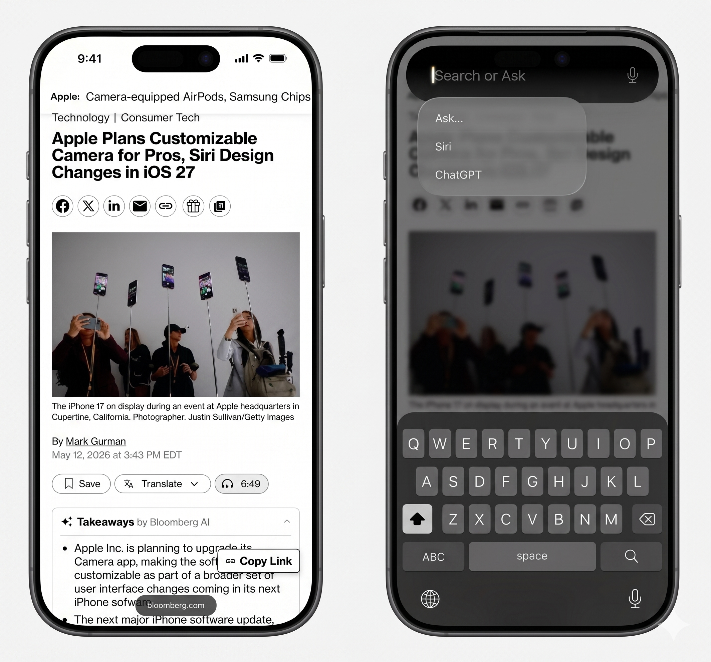

iOS 27 Leaked Before WWDC 2026: New Siri App, Dark UI, AI Camera & Every Feature Apple Didn't Want You to Know


WWDC 2026 is eight days away — June 8 at 10am PT — and Apple's iOS 27 has already been comprehensively leaked. Bloomberg's Mark Gurman, who has a near-perfect track record on Apple leaks over the past decade, published detailed screenshots and descriptions of iOS 27 features in his Power On newsletter this week, and the picture they paint is of the most significant Siri and AI overhaul in the product's 15-year history.
The headline feature is a standalone Siri app — iOS 27's answer to ChatGPT, Gemini, and Claude — but the scope of the changes goes well beyond a single app. A completely new search interface called Search or Ask replaces Spotlight. Siri gains cross-app personal context awareness for the first time, pulling data from Mail, Messages, Calendar, and Notes to answer personal questions with actual accuracy. The camera gets real-time AI analysis. And an Extensions system opens Siri to third-party AI providers including ChatGPT, Gemini, and Claude. Here's everything confirmed before the keynote.
Table of Contents
- The Standalone Siri App — Apple's ChatGPT Competitor
- Search or Ask — Replacing Spotlight from the Dynamic Island
- Personal Context Memory — Siri Finally Knows Your Life
- iOS 27 Dark UI Redesign — What's Changing Visually
- AI Camera Features in iOS 27
- The Gemini-Apple Deal — How Google Powers New Siri
- Extensions: ChatGPT, Claude & Gemini Inside Siri
- Every Confirmed iOS 27 Feature — Complete List
- Compatible Devices — Which iPhones Get Full iOS 27 AI Features
- iOS 27 Release Timeline — WWDC June 8 to September Launch
- Frequently Asked Questions
The Standalone Siri App — Apple's ChatGPT Competitor
The biggest structural change in iOS 27 is that Siri is getting its own dedicated app for the first time. Previously, Siri was purely a system-layer assistant — accessible by voice or button press but without a persistent interface of its own. iOS 27 changes this completely. The new Siri app functions as a full conversational AI client, comparable in design and capability to ChatGPT, Google Gemini, and Anthropic's Claude.
According to Gurman's screenshots, the Siri app launches with a dark interface by default — a deliberate design choice that positions it visually alongside the premium AI apps it's competing with rather than the lighter, stock iOS aesthetic of previous Siri interactions. The interface includes three core input methods: a text field at the bottom for typed queries, a microphone button for voice mode, and a paperclip icon for attaching files, images, or PDFs to your queries.
The conversation structure is multi-turn: Siri maintains context through a full back-and-forth session, retaining previous questions and answers within the conversation thread. This is fundamentally different from the previous Siri model, which treated each query independently and had no memory of what you said thirty seconds ago. iOS 27's Siri remembers the entire conversation. The messaging history can be set to auto-expire — a privacy feature that deletes conversation logs after a user-specified period, addressing concerns about AI assistants retaining sensitive personal queries.
The app is available on iPhone, iPad, and Mac, with a consistent interface across all three platforms. Apple Intelligence, the underlying framework that powers the new Siri, was introduced in iOS 18.1 and has expanded with each subsequent release. iOS 27 represents the most comprehensive deployment of Apple Intelligence to date, with the standalone app as its primary consumer-facing expression.
Search or Ask — Replacing Spotlight from the Dynamic Island
Alongside the new Siri app, iOS 27 introduces a completely redesigned search interface called Search or Ask. This replaces the previous Spotlight search, which was accessible by swiping down on the Home Screen and returned a combination of app results, web suggestions, and system settings. The new Search or Ask interface is both more powerful and more visually integrated with iPhone's hardware identity.
To launch Search or Ask, users swipe down from the top centre of the iPhone screen — directly from the Dynamic Island area. The Dynamic Island itself becomes the launch point and the results container. Search results return as rich text cards that visually expand out of the Dynamic Island, creating a seamless connection between the hardware design and the software function that Apple has been building toward since the Dynamic Island was introduced with the iPhone 14 Pro.
The interface includes a revamped Siri Suggestions panel that shows contextually relevant information without requiring a query. Frequently used apps appear in their most relevant order based on time of day and usage patterns. Recent web searches populate as quick-access cards. Weather information loads automatically based on location. Calendar events and upcoming reminders are surfaced proactively. The overall effect is a search interface that anticipates what you're looking for rather than waiting passively for input.
For users who do type a query, the response is qualitatively different from Spotlight. Instead of a list of links or app shortcuts, Search or Ask can synthesize an answer across the phone's data, the web, and connected services, and present it as a formatted card response directly in the interface — without launching a browser or switching apps. This is the same shift Google is making with AI Mode in Google Search, but delivered within the iOS system interface rather than through a web page.
Also Read
More Tech stories →Personal Context Memory — Siri Finally Knows Your Life
The most consequential capability improvement in iOS 27's Siri is personal context awareness — the ability to understand and use information from your own apps and data to answer questions that the previous Siri simply couldn't handle.
Apple demonstrated the concept at WWDC 2024 when it previewed what the new Siri could do in principle. iOS 27 is when those capabilities deploy at full scale. The specific examples Apple showed then — asking Siri about your mother's flight and Siri pulling the details from a forwarded email in Mail; asking Siri if there's a free window before a lunch reservation and Siri reading your Calendar — will be core functionality rather than demos.
The underlying mechanism is that Siri in iOS 27 has read access to Mail, Messages, Calendar, Notes, Photos, Reminders, and third-party apps that opt in through the Apple Intelligence API. When you ask a personal question, Siri doesn't search the web — it queries your data on-device. The processing happens on the device or in Private Cloud Compute (Apple's own server infrastructure with privacy guarantees), not in a shared cloud environment.
This on-device-first architecture is Apple's primary differentiator from Google's cloud-scale approach. Your personal queries and the data they reference don't leave Apple's privacy infrastructure. Whether users will trust this distinction in practice is a separate question — but the technical architecture does represent a meaningfully different privacy model than what Google or OpenAI offer with their equivalent features.
Additional personal context features confirmed for iOS 27 include on-screen awareness — Siri can now see what's on your screen at any moment and assist with it without you describing it. Point your camera at a restaurant menu and ask Siri what to order based on your dietary preferences from Health. Open a document and ask Siri to summarise it without copying any text. These capabilities represent a material expansion of what Siri can do in everyday contexts.
Key Takeaways
- iOS 27 introduces a standalone Siri app with dark UI, multi-turn conversation memory, voice and text modes, and file attachments — a direct competitor to ChatGPT, Gemini, and Claude available on iPhone, iPad, and Mac.
- Search or Ask replaces Spotlight with an AI-native interface launching from the Dynamic Island, returning rich card results rather than link lists. Personal context memory gives Siri cross-app awareness of Mail, Messages, Calendar, Photos, and Notes for the first time.
- An Extensions system opens iOS 27 to third-party AI providers — ChatGPT confirmed, Gemini and Claude reported as likely launch partners — giving users genuine choice over which AI model handles their queries.
iOS 27 Dark UI Redesign — What's Changing Visually
Beyond the Siri app, iOS 27 carries a broader visual refresh described by sources familiar with the design as the most significant interface change since iOS 7's flat redesign in 2013. The direction is darker, more ambient, and more differentiated between apps — moving away from the uniform light-on-white aesthetic that has defined iOS for over a decade.
Confirmed visual changes based on leaked descriptions and screenshots include new system-level translucency effects for menus and notification panels, updated iconography for several stock apps, and a revised Control Centre layout with larger, more touch-friendly tiles. The Lock Screen gains new widget types with expanded functionality — beyond the decorative and basic information widgets available in iOS 16 through iOS 26.
The dark-by-default approach for the new Siri app appears to be part of a wider signal about iOS 27's design language: AI-native interfaces within iOS will have a distinct visual identity that sets them apart from standard app interfaces. This creates a coherent system where users can immediately recognise when they're in an AI-powered context versus a standard productivity one.
AI Camera Features in iOS 27
iOS 27 extends Apple Intelligence into the Camera app in ways that go significantly beyond the Visual Look Up feature available in previous iOS versions. The new AI camera capabilities fall into two categories: real-time scene analysis and post-capture intelligence.
Real-time scene analysis means the camera can identify what it's pointed at and provide contextual assistance before you take a shot. Point it at food in a restaurant and it can estimate calories and macronutrients. Point it at a product barcode in a shop and it can compare prices across retailers without leaving the camera view. Point it at text in a foreign language and it translates in real time, overlaying the translation in the viewfinder at the appropriate position.
Post-capture intelligence builds on the Photo Assist features that debuted in previous Galaxy and Pixel devices but implements them within Apple's on-device processing model. Clean Up — the background object removal tool introduced in iOS 18 — becomes significantly more capable in iOS 27, handling complex foreground-background separations that previously produced obvious artifacts. Memory Movies gain an AI narrative layer that can generate contextual voiceover based on the photos and locations in the sequence.
For video, iOS 27 introduces intelligent stabilisation improvements beyond what hardware OIS provides, and real-time subject tracking that maintains focus on a moving subject even when partially obstructed. The improvements are processed through the Neural Engine on A17 Pro and later chips, which is why the most capable camera AI features are restricted to iPhone 15 Pro and newer.
The Gemini-Apple Deal — How Google Powers New Siri
One of the most unusual aspects of iOS 27's development is that Apple's new Siri is partly powered by Google's Gemini. This is documented through multiple sources including Bloomberg reporting: Apple and Google reached a licensing deal allowing Gemini's model infrastructure to support the foundational AI capabilities behind Apple Intelligence, including portions of the enhanced Siri.
The strategic logic on both sides is clear. Apple needed to dramatically accelerate its large language model capabilities to remain competitive with ChatGPT and Gemini — building from scratch to match OpenAI's model quality would have taken years that Apple doesn't have. Google needed deployment scale for Gemini and getting it embedded in Apple's billion-device ecosystem is an extraordinary distribution win regardless of what it means for Google Search revenue.
Apple's public framing will almost certainly not mention Gemini at the WWDC keynote. The presentation will emphasise Apple Intelligence, on-device processing, Private Cloud Compute, and the Extensions system that lets users choose their AI provider. The Gemini relationship is a backend infrastructure arrangement, not a branded user experience. Users won't see "Powered by Gemini" anywhere in iOS 27.
Siri has been able to access ChatGPT for queries since iOS 18.2 — Apple introduced this capability as the first step in its third-party AI integration strategy. iOS 27's Extensions system is the full deployment of that strategy, expanding from a single ChatGPT integration to a multi-provider system where AI companies compete for the Siri query volume that users direct to their platform.
Extensions: ChatGPT, Claude & Gemini Inside Siri
The AI Extensions system is the developer and ecosystem story in iOS 27, and it's likely to be a major focus of the WWDC keynote. Extensions allows third-party AI providers to register as Siri backends — meaning Siri can route specific types of queries to external AI models when the user selects or is offered that option.
ChatGPT is confirmed as an Extension provider, having been available in limited form since iOS 18.2. iOS 27 formalises and expands this into a proper Extensions framework. Mark Gurman's reporting names Gemini and Claude as the other likely launch partners, which would give iOS 27 users access to three of the four major AI assistant platforms through a single Siri interface.
The user experience for Extensions is expected to work as follows: when you ask Siri a question that could benefit from a more capable external model, Siri offers the option to route it to a connected Extension provider. The response comes back through the Siri interface rather than launching a separate app. Users can set preferred Extensions for specific task types — creative writing might default to Claude, research to Gemini, coding to ChatGPT, while personal context queries stay on Apple's on-device models.
For developers, the Extensions API represents the most significant new opportunity Apple is opening in iOS 27. AI companies that integrate with Siri Extensions gain access to user-initiated query routing from hundreds of millions of iPhone users — without requiring those users to download or open a separate app. The distribution implications are substantial enough that every major AI company will almost certainly seek Extension status rapidly after iOS 27 launches.
Every Confirmed iOS 27 Feature — Complete List
| Feature | Details | Source |
|---|---|---|
| Standalone Siri App | Dark UI, multi-turn conversation, file attachments, auto-expiring history | Gurman / Bloomberg |
| Search or Ask | Replaces Spotlight, launches from Dynamic Island, rich card results | Gurman / Bloomberg |
| Personal Context Memory | Cross-app awareness: Mail, Messages, Calendar, Notes, Photos | Apple WWDC 2024 preview |
| On-Screen Awareness | Siri can see and act on what's currently displayed on screen | Apple WWDC 2024 preview |
| AI Extensions System | ChatGPT confirmed; Gemini, Claude reported as launch partners | Gurman / Bloomberg |
| AI Camera: Real-Time Analysis | Live translation overlay, food calorie estimates, product price comparison | Multiple leakers |
| Upgraded Clean Up | Improved AI object removal, handles complex backgrounds | Apple internal |
| Dark UI Redesign | System-wide visual refresh, new translucency, updated stock app icons | 9to5Mac / Gurman |
| Expanded Lock Screen Widgets | New widget types with richer functionality beyond iOS 16 model | Multiple leakers |
| AI Memory Movies | AI-generated contextual narrative voiceover for photo/video memories | Apple internal |
| Gemini Model Integration | Backend infrastructure deal powering Apple Intelligence foundation models | Gurman / Bloomberg |
Compatible Devices — Which iPhones Get Full iOS 27 AI Features
iOS 27 will install on iPhone 13 and newer — Apple's standard multi-year OS support window. However, the full Apple Intelligence feature set is restricted to devices with sufficient chip capability. The Neural Engine power required for on-device AI processing at iOS 27's capability level sets a specific hardware floor.
| Device | iOS 27 Install | Full Apple Intelligence |
|---|---|---|
| iPhone 18 (2026) | ✅ Yes | ✅ Full features |
| iPhone 17 series (2025) | ✅ Yes | ✅ Full features |
| iPhone 16 series (2024) | ✅ Yes | ✅ Full features |
| iPhone 15 Pro / Pro Max | ✅ Yes | ✅ Full features (A17 Pro) |
| iPhone 15 / 15 Plus | ✅ Yes | ⚠️ Limited AI features (A16) |
| iPhone 14 series | ✅ Yes | ❌ No Apple Intelligence |
| iPhone 13 series | ✅ Yes | ❌ No Apple Intelligence |
| iPhone 12 and older | ❌ Not supported | ❌ Not supported |
For iPad, the full Apple Intelligence feature set requires iPads with M1 chip or later — iPad Pro (2021 and newer), iPad Air (M1 and M2), and iPad mini 7. Older iPads with A14 Bionic and below will receive the iOS 27 install but without Apple Intelligence features.
iOS 27 Release Timeline — WWDC June 8 to September Launch
The iOS 27 release follows Apple's established annual cadence, with WWDC marking the announcement and first developer access, followed by a summer beta period and a September public launch aligned with the new iPhone 18 hardware.
| Date | Milestone |
|---|---|
| June 8, 2026 | WWDC 2026 Keynote — iOS 27 announced at 10am PT. Developer Beta 1 available same day. |
| June–July 2026 | Developer Beta 2, 3, 4 — iterative releases addressing bugs and performance issues found by registered developers. |
| Late July 2026 | Public Beta 1 — available to any Apple ID via the Apple Beta Software Program. |
| August–September 2026 | Release Candidate — near-final build sent to developers before public launch. |
| September 2026 | iPhone 18 event — iOS 27 final release ships with new iPhone hardware and becomes available as a free OTA update for supported devices. |
Historically, Apple announces iOS at WWDC in June but staggers Apple Intelligence features across point releases throughout the year. iOS 18 launched in September 2024 but Apple Intelligence features didn't fully deploy until iOS 18.1, 18.2, and beyond into 2025. iOS 27 is likely to follow the same pattern — the September launch will include the core features confirmed in this article, but some of the more complex AI capabilities may arrive in iOS 27.1 or 27.2 over the following months.
Frequently Asked Questions
What is the new Siri app in iOS 27?
iOS 27 introduces a standalone Siri app for iPhone, iPad, and Mac functioning like ChatGPT, Gemini, and Claude. It supports text and voice input, multi-turn conversations with maintained context, auto-expiring message history, and file attachments. The interface uses a dark design by default — visually distinct from standard iOS apps to signal its AI-native context.
What is the 'Search or Ask' feature in iOS 27?
Search or Ask replaces Spotlight as iOS 27's primary search interface. It launches from the Dynamic Island (swipe down from top centre of the screen) and returns rich card results with synthesized answers rather than link lists. It includes proactive Siri Suggestions showing apps, recent searches, weather, and calendar items based on time and context.
Will Siri in iOS 27 understand personal context?
Yes — this is the most significant Siri upgrade in its history. iOS 27's Siri has cross-app personal context awareness: it can read Mail, Messages, Calendar, Notes, and Photos to answer personal questions like flight details, reservation times, and available meeting slots. It also has on-screen awareness, able to see what's currently displayed and offer relevant assistance without requiring you to describe it.
Does iOS 27 use Google Gemini to power Siri?
Yes, via a backend licensing deal. Gemini model infrastructure supports the foundation of Apple Intelligence features in iOS 27. This won't be disclosed during Apple's WWDC keynote. Siri has also been able to route queries to ChatGPT since iOS 18.2. The new Extensions system in iOS 27 expands this to include Gemini and Claude as user-selectable AI providers.
What AI chatbot extensions are coming to iOS 27?
iOS 27's Extensions system opens Siri to third-party AI providers. ChatGPT is confirmed. Mark Gurman reports Gemini and Anthropic's Claude as likely launch partners. Users will be able to select preferred providers per task type — routing creative queries to Claude, research to Gemini, coding to ChatGPT, while personal context queries stay on Apple's on-device models for privacy.
When will iOS 27 be released and which iPhones support full AI features?
iOS 27 is announced June 8, 2026, with Developer Beta 1 available immediately. Public Beta arrives in late July. Final public release is September 2026 with iPhone 18. Full Apple Intelligence features require iPhone 15 Pro or newer (A17 Pro chip or later). iPhone 14 and 15 standard can install iOS 27 but won't get Apple Intelligence features.
Conclusion
iOS 27 is the update that defines whether Siri becomes a serious AI platform or remains a feature that people use occasionally out of convenience and increasingly replace with external apps. The standalone Siri app, the Extensions system, personal context awareness, and the Search or Ask interface are all pointing in the same direction: Apple is making a serious, structural bet that AI assistants will be the primary way people interact with their phones within three years — and that the privacy advantages of on-device processing will be a meaningful differentiator against Google and OpenAI.
Whether that bet pays off depends almost entirely on execution. The feature list leaked by Gurman is ambitious. The Gemini deal and the Extensions system suggest Apple knows it cannot build all of this alone. The WWDC keynote on June 8 will tell us how polished the actual product is and how honestly Apple communicates the Gemini dependency to its customers. Either way, iOS 27 is the most technically significant iOS release in over a decade — and it ships in September regardless of what the reviews say.
Mike Reynolds
Senior Editor
Experienced journalist bringing you accurate, well-researched stories. Follow for the latest updates and in-depth coverage.
Leave a Comment